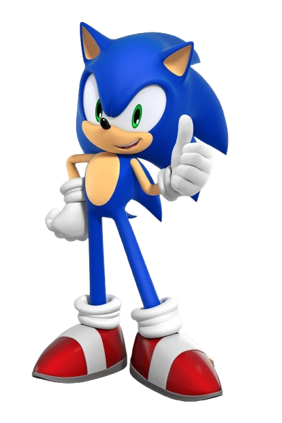
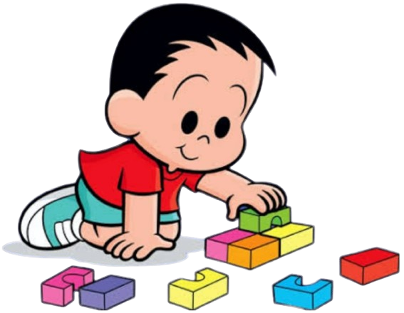
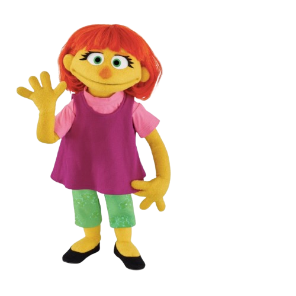
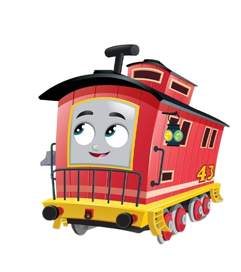

SONIC THE HEDGEHOG
Um personagem muito querido por indivíduos com TEA, é o Sonic.
Um ouriço azul, que tem uma super velocidade incrível.
Ele tem uma turma da qual faz parte e tem outros personagens bem interessantes que
fazem as crianças se apaixonarem por todos.
O QUE É O AUTISMO
O transtorno do espectro autista (TEA), também conhecido como autismo, é um distúrbio do
neurodesenvolvimento que tem como caracteristica seu desenvolvimento inusitado, alguns comportamentos
incomuns, déficits de atenção,
comunicação e em relação a interação social, alguns padrões comportamentais estereotipados e
repetitivos, que pode mostrar alguns interesses e atividade específicos em seu dia a dia, hipo ou
hipersensibilidade a alguns estímulos sensoriais.
Ele pode estar presente desde o nascimento ou começo da infãncia e existem diversos tipos de Autismo,
como o Autismo Infantil Precoce, Autismo Infantil, Autismo de Kanner, Autismo Atípico, entre outros.
Alguns sinais podem ser vistos nos primeiros meses de vida, mas o diagnóstico normalmente é determinado
aos 2 ou 3 anos de idade. O autismo é encontrado grande parte no sexo masculino.
CAUSA
As causa ainda não são totalmente conhecidas,
as pesquisas científicas sempre foram concentradas no estudo da predisposição genética,
verificando se poderia ocorrer algumas mutações no desenvolvimento do feto na gestação,
e a herança genética que é passada de pais para filhos.
Contudo, algumas evidência mostram que
as causas hereditárias iriam explicar apenas metade do risco de desenvolver TEA (Autismo).
Vários outros fatores podem acarretar em um desenvolvimento, como estresse, complicações na gravidez,
infecções, exposição a substancias nocivas e desequilibrios metabólicos também tem um peso na
possibilidade
de desenvolver.
Características do Autismo
O autismo acaba afetando o modo que o indivíduo se comporta, tanto que os primeiros sinais podem ser vistos quando ainda são bebes de poucos meses. Mas no contexto geral, uma criança ou pessoa com espectro autista apresenta alguns sintomas, como:
- º Dificuldade em se comunicar, as vezes optando por linguagem de sinais, linguagem corporal, uso repetitivo da linguagem e com bloqueios para começar e manter uma conversa;
- º Alteração no comportamento, como manias, apego exagerado a sua rotina, interesse intenso por coisas específicas, ações repetitivas, sensibilidade sensorial e dificuldade de imaginação;
- º Dificuldade para interagir socialmente, como expressar suas próprias emoções, fazer amigos, manter contato visual, gestos e expressão facial;
Existe alguns níveis em relação ao autismo, dividido em 3 graus, sendo o primeiro o mais leve e o
terceiro o mais grave.
O grau 1 de suporte apresenta alguns sintomas leves, que podem não impedir de estudar, trabalhar e se
relacionar com outros indivíduos.
O grau 2 de suporte, tem um menor grau de independência mas precisa de auxílio para poder fazer funções
do dia a dia, como tomar banho ou fazer sua refeição.
O grau 3 de suporte, já o grau que vai apresentar mais dificuldades graves e costuma precisar de atenção
e apoio especializado ao longo de toda sua vida.
Estes graus são rotulados no Manual Diagnóstico e Estatístico de Transtornos Mentais DSM-5.
Porém, o autismo não apresenta somente coisas negativas, tanto que o diagnóstico pode mostrar que o
indivíduo com espectro autista pode ter facilidade para aprender visualmente, graças a sua atenção aos
detalhes e à exatidão; capacidade de memorizar acima da média e também muita concentração em uma área de
interesse específica por um período longo.
Cada pessoa com o espectro irá se desenvolver de uma maneira particular, com seus conjunto de sintomas
variados e sua própria característica. E isso vai influenciar como cada um se relaciona, se comporta e
se expressa.
Diagnóstico
Conforme foi dito anteriormente, os primeiros sinais podem ser vistos quando ainda são bebês, entre 1 a 3
anos de vida, mesmo que possam ser detectados antes ou depois disso, caso os atrasos de desenvolvimento
sejam mais sutis ou mais graves. A partir dos 12 meses (1 ano), as crianças autistas podem não apontar
com seu dedinho, apresentar um interesse bem especifico por objetos, contato visual passa a ser evitado
e acabam ignorando quando são chamadas. Também é importante informar que existem casos bem raros de
regressão no desenvolvimento, que são normalmente identificados após pelo menos 2 anos de
desenvolvimento.
Com 18 meses (1 ano e meio) pode ser feito uma avaliação com um profissional especializado, como um
psiquiatra pediátrico ou neuropediatra. O diagnóstico se faz por meio da observação direta do
comportamento e os pais e cuidadores participam de uma entrevista, que pode adicionar o teste com escala
M-CHAT.
Só é confirmado quando a criança ou pessoa apresenta as características principais do autismo. A
condição pode ser apresentada em graus separados, que acaba fazendo com que os sinais possam ter
variações. Um exemplo disso é que o autismo leve pode acabar levando mais tempo para poder ser
diagnosticado, porque acaba sendo confundido com outros comportamentos comuns, como timidez e falta de
atenção.
Indivíduos autistas podem apresentar sintomas adeptos em graus diferentes, como atraso na linguagem,
surtos nervoso e agressividade, habilidade cognitiva fora do normal (que pode ser para mais ou para
menos) fora outras condições associadas.
Graças ao diagnóstico, podemos identificar que tipo de tratamento a criança necessita de acordo com seu
grau. Com o acompanhamento adequado, os sintomas tendem a melhorar ao longo da vida, melhorando tanto a
qualidade de vida do indivíduo quanto a da família.
Tratamento
Ainda não há remédios específicos para poder tratar o autismo em si, por mais que seja um prioridade nas
pesquisas. Mas, existem alguns medicamentos que podem auxiliar em alguns comportamentos, como
agressividade, insônia, hiperatividade, ansiedade, depressão e falta de atenção. O mais aconselhado, é
que seja feito um acompanhamento médico multidisciplinar, com psiquiatra, neurologista, fonoaudiólogo,
pediatra, entre outros. A conduta depende do quão intenso é o grau e da idade do paciente e há a
necessidade de ser decidido com os pais.
Os tratamentos servem para poder testar e aprimorar as habilidades comunicativas, sociais,
organizacionais e adaptativas. Existem jogos para poder incentivar a interação com outra pessoa, alguns
exercícios de comunicação, manutenção e aprendizado de novas habilidades e apoio a atitudes positivas
para contrapor problemas de comportamento. As avaliações costumam ser realizadas a cada 3 ou 6 meses,
para compreender as mudanças que precisam ser feitas na abordagem ou na intesidade do tratamento.
Algo que é necessário e muito importante no tratamento, é o treinamento com os pais. Ele é fundamental
pois traz diversos benefícios na maneira que deve se comportar, nas suas habilidades e em como
socializar melhor. Fora que também é recomendado um acompanhamento psicológico para a familia, já que o
processo pode acabar gerando um desgaste emocional por conta do que o distúrbio pode provocar.
Personagens Autistas
Existem alguns personagens que podem ser relacionados ao espectro autista e alguns que os autistas amam só por existirem. Aqui temos alguns exemplos:
Carregando música...
Sonic

André

André Turma da Monica
Temos o André da Turma da Mônica, que foi visto pela primeira vez em 2003, no gibi chamado “Um Amiguinho Diferente”. Ele é um menino autista que não interage muito com os outros, mas faz parte de algumas aventuras.
Temos o André da Turma da Mônica, que foi visto pela primeira vez em 2003, no gibi chamado “Um Amiguinho Diferente”. Ele é um menino autista que não interage muito com os outros, mas faz parte de algumas aventuras.
Júlia

Júlia Vila Sésamo
A Júlia também é um bom exemplo, ela faz parte do Vila Sésamo, uma série que foi sucesso no Brasil e que hoje é exibida na PBS e HBO, ela foi mostrada pela primeira vez em 2017.
A Júlia também é um bom exemplo, ela faz parte do Vila Sésamo, uma série que foi sucesso no Brasil e que hoje é exibida na PBS e HBO, ela foi mostrada pela primeira vez em 2017.
Bruno

Bruno, Thomas e Seus Amigos
Bruno, de Thomas e seus Amigos, que foi integrado ao desenho em 2022. Ele é um vagão de frenagem que fica no fundo dos trens. Por isso ele acaba tendo uma perspectiva completamente diferente de todos os outros.
Bruno, de Thomas e seus Amigos, que foi integrado ao desenho em 2022. Ele é um vagão de frenagem que fica no fundo dos trens. Por isso ele acaba tendo uma perspectiva completamente diferente de todos os outros.
Shawn
Shawn Murphy, The Good Doctor
Shawn é um médico incrível, que tem um conhecimento esplêndido na área onde atua, porém, sofre com as dificuldades de se relacionar e interagir com as pessoas. Ele é um autista com síndrome de Savant, mas no decorrer da série, ele consegue controlar suas emoções e passa a equilibrar as coisas.
Shawn é um médico incrível, que tem um conhecimento esplêndido na área onde atua, porém, sofre com as dificuldades de se relacionar e interagir com as pessoas. Ele é um autista com síndrome de Savant, mas no decorrer da série, ele consegue controlar suas emoções e passa a equilibrar as coisas.